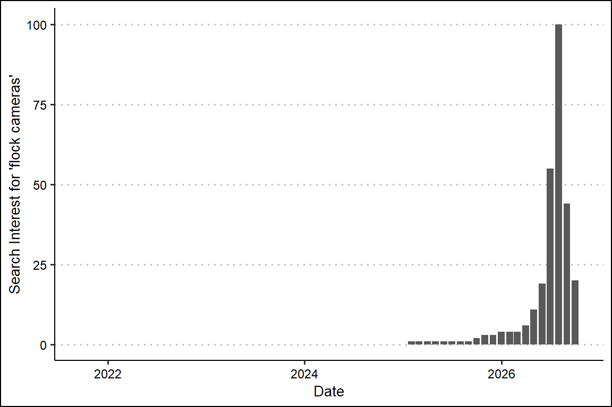
Zero Inflated Count Regression Article
1 Background
1.1 Zero Inflated Count Regression
Zero inflated count regression is a modification of a generalized linear model following a count distribution, like Poisson or Negative Binomial. When our data has more counted zeros than the model would predict, this usually causes the model to be overdispersed, and the effects of terms in the model to be overestimated. To adjust for this, we treat the zeros as being predicted by a logistic regression model, while all the points greater than zero are predicted by the specified count regression model.
Where a typical negative binomial regression has the form:
\[\begin{align*} log(\mu_{Y_i|x_i}) = \beta_0 + \beta_1 x_{1i} + \cdots + \beta_{p-1} x_{(p-1)i} \end{align*}\] where \(\mu_{Y_i|x_i}\) is the mean of the Negative Binomial distribution from which the \(i\text{th}\) response is drawn.
A zero inflated negative binomial model predicts the zeros from a logistic model:
\[log\left(\frac{\pi_i}{1-\pi_i}\right) = \alpha_0 + \alpha_1 x_{1i} + ... + \alpha_{p-1} x_{(p-1)i}\] where \(log\left(\frac{\pi_i}{1-\pi_i}\right)\) is the log odds of a structural 0.
Also, two models don’t need to have the same set of predictor \(x_i\)’s.
Note: The same transformation can be applied to poisson models as well as models with an offset.
We usually care about interpreting the negative binomial model more than the logistic model, but what causes zeros can also be interesting.
1.2 The Study
Surveillance, in any form, has long been controversial and politicized. Foucalt used the example of the panopticon to illustrate the way constant surveillance suffocates freedom and assures the maintenance of power (Foucault 2012). 25 Years ago, the war on terror in the United States served as the pretense for the passing of the Patriot Act, allowing the U.S. government greater access to personal digital information for the ostensible cause of anti-terrorism (King 2026).
Where surveillance in previous decades was limited by an understanding that the guard in the panopticon tower could not be constantly watching every person, and a government official could not sift through every possible online document, the ability of large language models to scrape information from massive databases in real time has pushed the envelope for surveillance.
Surveillance camera adoption has exploded in recent years, as algorithmic video detection models, like those used in cameras manufactured by Flock Safety, has led to data collection and surveillance on an unparalleled level (Brumbaugh 2026).
The article by Dahir et al. titled, “Surveillance camera prevalence and racial diversity in ten US cities”, published in 2025, looks to see how the prevalence and density of surveillance cameras in major U.S. cities differs by demographic and socioeconomic characteristics of the areas they’re in. They look to investigate if surveillance cameras are highest in homogeneous black neighbrhoods, as that would confirm the historical theory that black people often live in neighborhoods with characteristics resembling the carceral system. Another hypothesis says that surveillance cameras might be highest in more diverse neighborhoods where white residents might be more inclined to use the cameras for perceived safety and control. For example, white people who might be perceived as ‘gentrifiers’ in historically diverse neighborhoods might take pride in heterogeneous demographics while still feeling a sense of comfort with the added surveillance of a camera (Dahir et al. 2025).
To collect their count of surveillance cameras, the authors first trained a machine learning image detection model on confirmed camera locations the ten most dense populated cities in the United States:
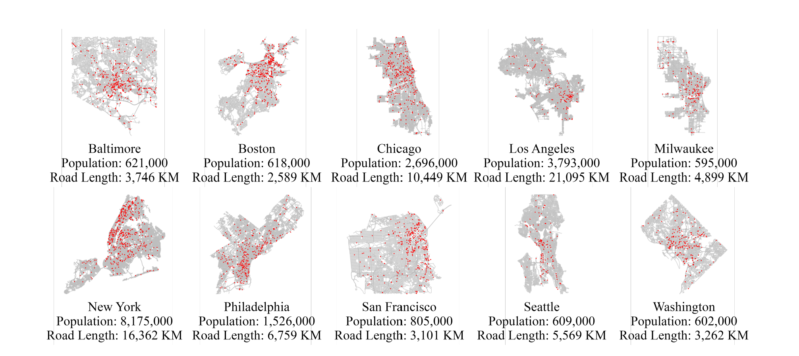
After model training, they randomly selected 100,000 points within each city, went to each of those points with Google Street View, and captured a 360° photo of the surroundings. They they ran all those photos through the camera detection models, and had humans validate the existence of cameras in photos flagged by the model (those poor undergrads). The researchers estimate that around 60% of cameras in the photos were detected by the model, so the magnitude of the data is likely undercounted. The count of the cameras was then combined with publicly available demographic data from where each photo was taken to create a combined dataset.
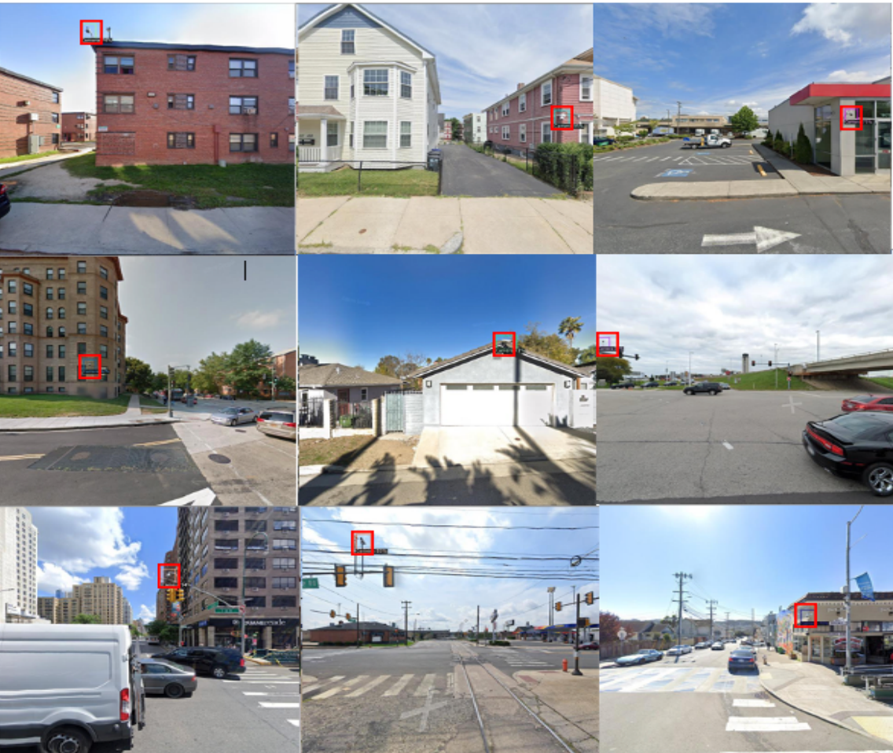
1.3 Goal of Statistical Analysis
Because of the countable nature of the data, the researchers propose using a generalized linear model with a poisson distribution. Because of a large amount of images with no cameras taken, it makes sense to include the zeros in the model structurally with a logistic component.
I think their main analysis points are seeing how camera amounts change with regards to the white %, black%, and overall diversity of the areas, while accounting for other socioeconomic and strucutural confounding variables like income levels, crime rate, zoning, etc.
1.3.1 Formula Antics
I had a somewhat hard time determining the correct formula and terms for the regression equation. Below I’ll illustrate several reasons why:
In the methods, the authors say:
” We also expect excess zeros to be generated by a separate process from counts.”
I didn’t immediately know what this meant without looking at the code. After finding the equation I assume they used by looking in the code, I found this quote which is, in a choice I find puzzling, separate from the quote above:
“The zero component accounts for the city and road length in all models.”
Which, by confirming with their code, means the logistic element of their zero-inflated model is only regressed on the city with the road length as an offset. However, I don’t understand why the other metrics in the model wouldn’t also contribute to the detection of zero cameras, so I think it makes sense to leave them in both sides of the model.
They mention the inclusion of quadratic terms for the racial demographic variables (in the results but not the methods):
“Given the parabolic relationships observed in the bivariate models, this model includes quadratic terms for both Black and white residents.”
I take this to mean they adjusted the model after seeing a quadratic looking relationship in some of their effects in a “bivariate model”. I can only assume this because there’s no mention of a “bivariate model” in their methods, so the reader is left to wonder if that was the original hypothesis, a planned arm of their analysis, or something else. Still, the inclusion of the quadratic terms makes sense as the demographic variables are percentages and not truly continuous, however I’m not sure why they don’t mention this explicitly in the methods. However, if these terms were only added because of a noticed trend in their data, this is basically ‘HARKing’, or “hypothesizing after the results are known,” which is generally frowned upon in research (Taylor 2025).
Lastly, the authors mention the use of images taken as a weight component in the model:
“We include … a weight for the image count.”
This weights the data points with more images taken more heavily in the model. I think this highlights a potential issue with the data collection, and regardless of the choice of including or not including the weights, each has its own issues. If we don’t include the images taken as a weight, a single image taken for one observation is weighted the same as an observation with over a hundred images taken; clearly one of those is more comprehensive. However, not all images are created equal, and images taken in close proximity to each other don’t necessarily add importance to that observation. Because of this, I’ll go forward with both options, seeing if the weights significantly alter the model.
With all that being said here’s the regression equation I personally think makes sense:
Predictors (Poisson Counts and Logistic Zeros):
- % White (quadratic and linear)
- % Black (quadratic and linear)
- Overall Racial Diversity
- Crime Rate
- Population
- Median Household Income (in thousands)
- Home Vacancy Rate
- Median Home Value (in thousands)
- Neighborhood Designation (residential, public, commercial, industrial, roads, or mixed)
- City (Baltimore, Boston, Chicago, Los Angeles, Milwaukee, New York City, Philadelphia, San Francisco, Seattle, or Washington D.C.)
Offset:
- Road length (km)
Weights (potentially):
- log(images taken)
In R, our formula call looks like this:
2 Reproduction of the Study
2.1 Data Cleaning
I mainly renamed the variables to my liking, as well as scaling the continous metrics because that made the model behave better later on (not shown).
Code
dat <- read_csv('cameras.csv')
dat <- dat |>
rename(cameras = cam_count,
images = image_count,
white = pnhwht,
black = pnhblk,
diversity = entropy,
crime = total_crime_rate,
income = hinc,
vacancy = pvac,
home_value = mhmval,
zone = modal_zone,
road_length = road_length_km)
dat$diversity <- as.vector(scale(dat$diversity))2.2 Data Summary
Let’s see how the data is split up by city:
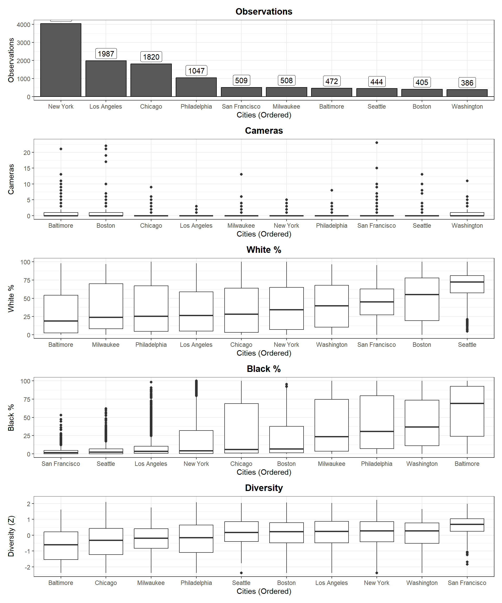
Our dataset is heavily influenced by New York City. We also see that most of the cities are relatively close in diversity, even with large differences in percentage of white and black populations. Lastly, there’s not much we can get from the cameras because there’s so many zeros.
Here’s a rough correlation analysis between white%, black%, diversity% and cameras:
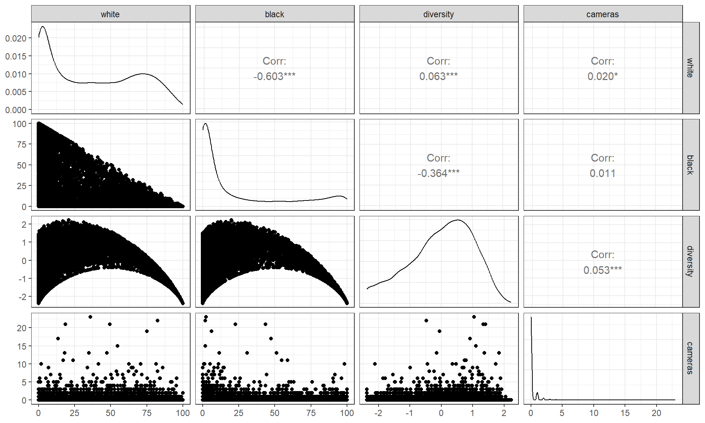
Hard to see any pattern in the demographic factors against the camera counts.
2.3 Model Assumptions
2.3.1 Zero Inflation
First let’s see, how is zero inflated is the model compared to what we’d expect under a standard poisson regression:
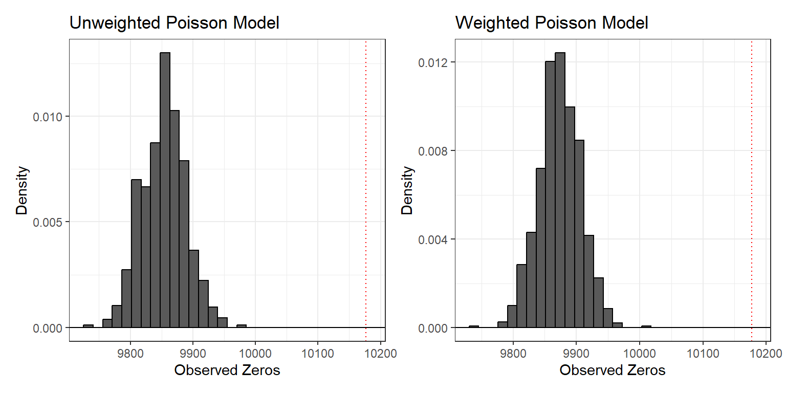
We never even come close to simulating as many zeros as there are observed. This definitely warrants a zero inflated model.
2.3.2 Dispersion
Here we’ll test the randomized quantile residuals of the zero inflated model and the dispersion ratio. First, the unweighted model:
The randomized quantile residuals look pretty good, as there’s a relatively even band of points. The dispersion ratio is a tad high but still not bad. There’s a few outliers but that’s to be expected with a very large sample size.
Next, the weighted model:
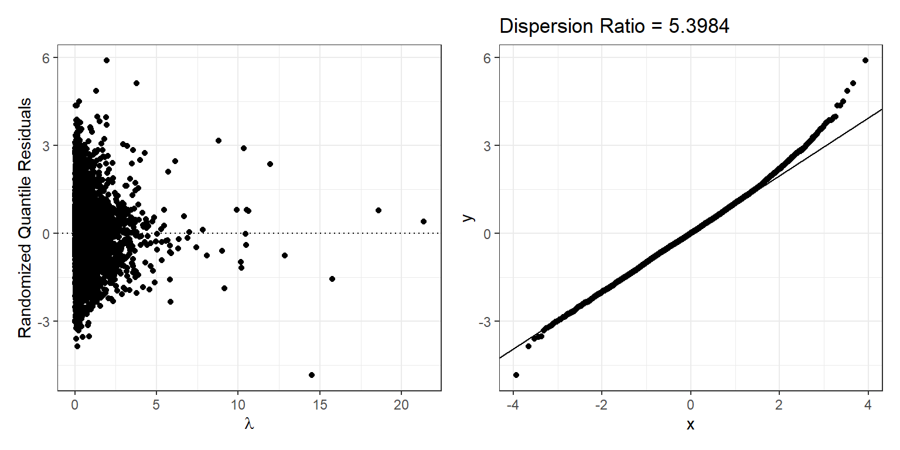
Adding the weights significantly increases the overdispersion of the model.
We can also check our predictions against the standardized Pearson residuals:
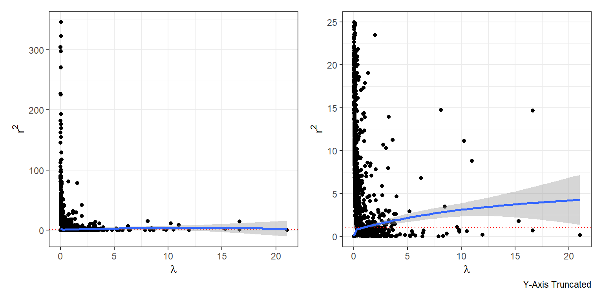
Looking more closely around 1, we see an increasing curved pattern as \(\lambda\) increases. This might suggest that a negative binomial might be better suited, but combined with the dispersion ratio and randomized quantile residuals, I think a poisson model is pretty well justified here.
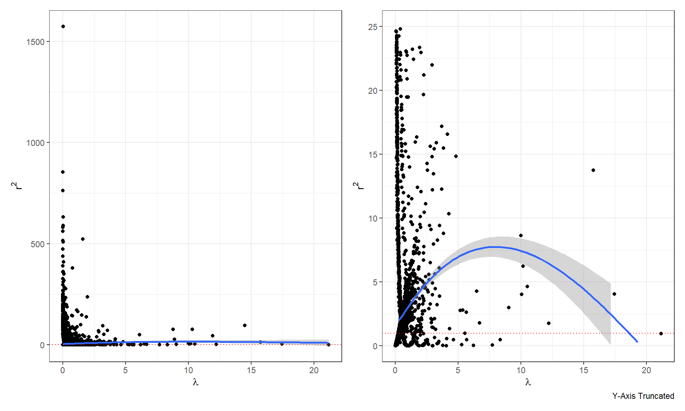
The curved pattern seen before appears worse for the weighted model, but the points don’t really show a clear trend, so this could be an artifact of random noise.
2.3.3 Multicollinearity
Because the design matrix is the same for both models, the VIF for both models is:
| Term | VIF | Lower CI | Upper CI |
|---|---|---|---|
| White % | 4.772 | 4.643 | 4.883 |
| (White %)^2 | 3.938 | 3.833 | 4.029 |
| Black % | 8.235 | 8.009 | 8.429 |
| (Black %)^2 | 10.575 | 10.285 | 10.826 |
| Diversity | 7.794 | 7.581 | 7.978 |
| Crime Rate | 1.487 | 1.456 | 1.513 |
| Population | 1.425 | 1.397 | 1.449 |
| Median Income | 3.464 | 3.372 | 3.543 |
| Vacancy Rate | 1.368 | 1.342 | 1.390 |
| Median Home Value | 4.041 | 3.933 | 4.134 |
| Zoning | 23.407 | 22.770 | 23.972 |
| City | 100.364 | 97.664 | 102.821 |
To be expected, a lot of the variables have very high correlations with other variables, especially the demographic characteristics of each city. While I’ll keep the city term in the model to compare with the paper’s analysis, I do think it’s probably not providing much necessary information that’s not contained in other variables.
2.3.4 Sufficient Sample Size for Predictors
Ideally we should have at least 10 events counted per predictor:
\[\begin{align*} \sum_{i=1}^{n = 11,620} \lambda_{i} = 2524 \geq 10p = 10(25) = 250 \quad \checkmark \end{align*}\]
2.4 Model Fit
We can obtain an overall model fit of both models. First, the unweighted model:
| AIC | AICc | BIC | R2 | R2_adjusted | RMSE | Sigma | Score_log | Score_spherical |
|---|---|---|---|---|---|---|---|---|
| 10470.73 | 10471.17 | 10838.75 | 0.186 | 0.184 | 0.67 | 0.671 | -0.446 | 0.009 |
Our unweighted model explains 18.4% of the variance in surveillance cameras.
Now the weighted model:
| AIC | AICc | BIC | R2 | R2_adjusted | RMSE | Sigma | Score_log | Score_spherical |
|---|---|---|---|---|---|---|---|---|
| 44517.89 | 44518.33 | 44885.91 | 0.062 | 0.06 | 1.522 | 3.598 | -0.447 | 0.009 |
Our weighted model explains 6% of the variance in surveillance cameras.
Remember that some of the model fit statistics are non-comparable because they’re calculated differently for weighted and non-weighted models.
We can directly compare the model fits with the cross-validated root mean square error:
| Fold | unweighted | weighted |
|---|---|---|
| 1 | 0.700 | 0.700 |
| 2 | 0.639 | 0.644 |
| 3 | 0.716 | 0.718 |
| 4 | 0.745 | 0.740 |
| 5 | 0.668 | 0.664 |
| 6 | 0.531 | 0.533 |
| 7 | 0.965 | 0.990 |
| 8 | 0.672 | 0.673 |
| 9 | 0.739 | 0.733 |
| 10 | 0.687 | 0.689 |
| Mean | 0.706 | 0.708 |
This tells us, that by their ability to predict, the models are almost identical.
2.5 Model Inference
Now to the heart of the analysis:
- How many surveillance cameras are in highly white or highly black neighborhoods?
- How many surveilance cameras are in more diverse neighborhoods?
- Are there other confounding factors that affect surveillance cameras?
Spoiler: The effect of certain factors is dependent on the weighting of the model. As annoying as this is, it means I have to show a unweighted and weighted version of each analysis.
A general summary our unweighted model gives us:
| Estimate | SE | Z | p | significance | Percent Change | |
|---|---|---|---|---|---|---|
| Intercept | -0.743 | 0.344 | -2.157 | 0.031 | * | |
| White % | 0.183 | 0.134 | 1.362 | 0.173 | 20.1 | |
| (White %)^2 | 0.034 | 0.138 | 0.249 | 0.803 | 3.5 | |
| Black % | 0.288 | 0.163 | 1.760 | 0.078 | . | 33.3 |
| (Black %)^2 | 0.120 | 0.131 | 0.914 | 0.361 | 12.7 | |
| Diversity | 0.146 | 0.160 | 0.911 | 0.362 | 15.7 | |
| Crime Rate | -1.798 | 0.216 | -8.329 | <0.001 | *** | -83.4 |
| Population | -0.320 | 0.052 | -6.123 | <0.001 | *** | -27.4 |
| Median Income | 0.290 | 0.086 | 3.390 | <0.001 | *** | 33.7 |
| Vacancy Rate | -0.167 | 0.067 | -2.491 | 0.013 | * | -15.3 |
| Median Home Value | -0.450 | 0.114 | -3.933 | <0.001 | *** | -36.2 |
| Zone = Industrial | -0.809 | 0.487 | -1.662 | 0.096 | . | -55.5 |
| Zone = Mixed | -0.029 | 0.348 | -0.082 | 0.934 | -2.8 | |
| Zone = Public | 0.389 | 0.346 | 1.124 | 0.261 | 47.5 | |
| Zone = Residential | 0.438 | 0.215 | 2.040 | 0.041 | * | 54.9 |
| Zone = Roads | -0.256 | 0.516 | -0.495 | 0.621 | -22.6 | |
| City = Boston | 0.751 | 0.254 | 2.955 | 0.003 | ** | 111.9 |
| City = Chicago | 0.006 | 0.302 | 0.019 | 0.985 | 0.6 | |
| City = Los Angeles | 1.313 | 0.414 | 3.173 | 0.002 | ** | 271.7 |
| City = Milwaukee | -0.025 | 0.265 | -0.095 | 0.924 | -2.5 | |
| City = New York | 1.014 | 0.295 | 3.437 | <0.001 | *** | 175.6 |
| City = Philadelphia | -0.024 | 0.250 | -0.097 | 0.922 | -2.4 | |
| City = San Francisco | 1.109 | 0.396 | 2.802 | 0.005 | ** | 203.1 |
| City = Seattle | 1.332 | 0.306 | 4.346 | <0.001 | *** | 278.7 |
| City = Washington | -0.205 | 0.476 | -0.432 | 0.666 | -18.6 |
where the percent change \(= (e^{\text{estimate}}-1) \times 100\).
Based on the summary of the unweighted logistic model, there’s a:
- 15.7% greater chance of a surveillance camera as the diversity of the area increases by 1 standard deviation (non-statistically significant).
- 83.4% lesser chance of a surveillance camera as the crime rate of an area increases by 1 standard deviation (\(Z = -8.329, p < 0.001\)).
- 27.4% lesser chance of a surveillance camera as the population of an area increases by 1 standard deviation (\(Z = -6.123, p <0.001\)).
- 33.7% greater chance of a surveillance camera as the median income of an area increases by 1 standard deviation (\(Z = -3.390, p <0.001\)).
- 15.3% lesser chance of a surveillance camera as the vacancy rate of an area increases by 1 standard deviation (\(Z = -2.491, p = 0.013\)).
- 36.2% lesser chance of a surveillance camera as the median home value of an area increases by 1 standard deviation (\(Z = -3.933, p <0.001\)).
We’ll get into the other terms later on.
| Estimate | SE | Z | p | significance | Percent Change | |
|---|---|---|---|---|---|---|
| Intercept | -0.985 | 0.146 | -6.762 | <0.001 | *** | |
| White % | 0.005 | 0.065 | 0.074 | 0.941 | 0.5 | |
| (White %)^2 | 0.017 | 0.070 | 0.243 | 0.808 | 1.7 | |
| Black % | -0.090 | 0.081 | -1.113 | 0.266 | -8.6 | |
| (Black %)^2 | -0.016 | 0.063 | -0.247 | 0.805 | -1.5 | |
| Diversity | 0.107 | 0.076 | 1.406 | 0.16 | 11.2 | |
| Crime Rate | 0.036 | 0.008 | 4.682 | <0.001 | *** | 3.6 |
| Population | 0.056 | 0.012 | 4.615 | <0.001 | *** | 5.8 |
| Median Income | -0.086 | 0.041 | -2.095 | 0.036 | * | -8.2 |
| Vacancy Rate | 0.043 | 0.027 | 1.592 | 0.111 | 4.4 | |
| Median Home Value | -0.030 | 0.054 | -0.555 | 0.579 | -2.9 | |
| Zone = Industrial | -0.259 | 0.117 | -2.216 | 0.027 | * | -22.8 |
| Zone = Mixed | 0.144 | 0.106 | 1.353 | 0.176 | 15.4 | |
| Zone = Public | -0.426 | 0.145 | -2.940 | 0.003 | ** | -34.7 |
| Zone = Residential | -0.495 | 0.087 | -5.682 | <0.001 | *** | -39 |
| Zone = Roads | -0.509 | 0.316 | -1.611 | 0.107 | -39.9 | |
| City = Boston | 0.128 | 0.112 | 1.146 | 0.252 | 13.7 | |
| City = Chicago | -1.942 | 0.124 | -15.623 | <0.001 | *** | -85.7 |
| City = Los Angeles | -2.799 | 0.238 | -11.744 | <0.001 | *** | -93.9 |
| City = Milwaukee | -1.246 | 0.127 | -9.779 | <0.001 | *** | -71.2 |
| City = New York | -1.196 | 0.167 | -7.177 | <0.001 | *** | -69.8 |
| City = Philadelphia | -1.197 | 0.112 | -10.677 | <0.001 | *** | -69.8 |
| City = San Francisco | -0.632 | 0.187 | -3.373 | <0.001 | *** | -46.9 |
| City = Seattle | -1.482 | 0.150 | -9.868 | <0.001 | *** | -77.3 |
| City = Washington | -0.551 | 0.307 | -1.793 | 0.073 | . | -42.4 |
Based on the summary of the unweighted count model, we’d expect to see:
- 11.2% more surveillance cameras as the diversity of the area increases by 1 standard deviation (non-statistically significant).
- 3.6% more surveillance cameras as the crime rate of an area increases by 1 standard deviation (\(Z = 4.682, p < 0.001\)).
- 5.8% more surveillance cameras as the population of an area increases by 1 standard deviation (\(Z = 4.615, p <0.001\)).
- 8.2% fewer surveillance cameras as the median income of an area increases by 1 standard deviation (\(Z = -2.095, p = 0.036\)).
- 4.4% more surveillance cameras as the vacancy rate of an area increases by 1 standard deviation (non-statistically significant).
- 2.9% fewer surveillance cameras as the median home value of an area increases by 1 standard deviation (non-statistically significant).
Note that the effect of the linear black % term is only marginally discernible, and the quadratic effect is non statistically discernible.
| Estimate | SE | Z | p | significance | Percent Change | |
|---|---|---|---|---|---|---|
| Intercept | -0.737 | 0.165 | -4.473 | <0.001 | *** | |
| White % | 0.118 | 0.066 | 1.781 | 0.075 | . | 12.5 |
| (White %)^2 | 0.046 | 0.066 | 0.702 | 0.483 | 4.8 | |
| Black % | 0.341 | 0.079 | 4.302 | <0.001 | *** | 40.6 |
| (Black %)^2 | 0.079 | 0.062 | 1.261 | 0.207 | 8.2 | |
| Diversity | 0.126 | 0.077 | 1.633 | 0.102 | 13.5 | |
| Crime Rate | -2.012 | 0.106 | -19.023 | <0.001 | *** | -86.6 |
| Population | -0.346 | 0.026 | -13.438 | <0.001 | *** | -29.3 |
| Median Income | 0.349 | 0.042 | 8.389 | <0.001 | *** | 41.7 |
| Vacancy Rate | -0.129 | 0.031 | -4.205 | <0.001 | *** | -12.1 |
| Median Home Value | -0.528 | 0.060 | -8.740 | <0.001 | *** | -41 |
| Zone = Industrial | -1.152 | 0.264 | -4.359 | <0.001 | *** | -68.4 |
| Zone = Mixed | -0.068 | 0.166 | -0.408 | 0.683 | -6.6 | |
| Zone = Public | 0.248 | 0.166 | 1.499 | 0.134 | 28.2 | |
| Zone = Residential | 0.320 | 0.103 | 3.096 | 0.002 | ** | 37.7 |
| Zone = Roads | -0.388 | 0.230 | -1.682 | 0.093 | . | -32.1 |
| City = Boston | 0.924 | 0.118 | 7.838 | <0.001 | *** | 152 |
| City = Chicago | -0.035 | 0.149 | -0.237 | 0.812 | -3.5 | |
| City = Los Angeles | 1.461 | 0.203 | 7.203 | <0.001 | *** | 331 |
| City = Milwaukee | -0.070 | 0.120 | -0.586 | 0.558 | -6.8 | |
| City = New York | 1.027 | 0.148 | 6.935 | <0.001 | *** | 179.3 |
| City = Philadelphia | -0.055 | 0.120 | -0.461 | 0.645 | -5.4 | |
| City = San Francisco | 1.209 | 0.192 | 6.285 | <0.001 | *** | 235.1 |
| City = Seattle | 1.484 | 0.141 | 10.532 | <0.001 | *** | 341.1 |
| City = Washington | -0.192 | 0.212 | -0.907 | 0.364 | -17.5 |
Based on a summary of the weighted logistic model, there’s a:
- 13.5% greater chance of a surveillance camera as the diversity of the area increases by 1 standard deviation (non-statistically significant).
- 86.6% lesser chance of a surveillance camera as the crime rate of an area increases by 1 standard deviation (\(Z = -19.023, p < 0.001\)).
- 29.3% lesser chance of a surveillance camera as the population of an area increases by 1 standard deviation (\(Z = -13.438, p <0.001\)).
- 41.7% greater chance of a surveillance camera as the median income of an area increases by 1 standard deviation (\(Z = 8.389, p <0.001\)).
- 12.1% lesser chance of a surveillance camera as the vacancy rate of an area increases by 1 standard deviation (\(Z = -4.205, p = 0.013\)).
- 41% lesser chance of a surveillance camera as the median home value of an area increases by 1 standard deviation (\(Z = -8.389, p <0.001\)).
| Estimate | SE | Z | p | significance | Percent Change | |
|---|---|---|---|---|---|---|
| Intercept | -0.967 | 0.064 | -15.074 | <0.001 | *** | |
| White % | -0.041 | 0.029 | -1.404 | 0.16 | -4 | |
| (White %)^2 | 0.052 | 0.030 | 1.723 | 0.085 | . | 5.4 |
| Black % | -0.092 | 0.035 | -2.596 | 0.009 | ** | -8.8 |
| (Black %)^2 | -0.021 | 0.028 | -0.764 | 0.445 | -2.1 | |
| Diversity | 0.127 | 0.034 | 3.778 | <0.001 | *** | 13.6 |
| Crime Rate | 0.038 | 0.003 | 11.802 | <0.001 | *** | 3.9 |
| Population | 0.058 | 0.005 | 11.711 | <0.001 | *** | 6 |
| Median Income | -0.070 | 0.018 | -3.962 | <0.001 | *** | -6.8 |
| Vacancy Rate | 0.072 | 0.012 | 6.123 | <0.001 | *** | 7.5 |
| Median Home Value | -0.051 | 0.025 | -2.047 | 0.041 | * | -5 |
| Zone = Industrial | -0.321 | 0.050 | -6.477 | <0.001 | *** | -27.5 |
| Zone = Mixed | 0.090 | 0.046 | 1.947 | 0.052 | . | 9.4 |
| Zone = Public | -0.472 | 0.063 | -7.513 | <0.001 | *** | -37.6 |
| Zone = Residential | -0.569 | 0.038 | -14.850 | <0.001 | *** | -43.4 |
| Zone = Roads | -0.557 | 0.137 | -4.065 | <0.001 | *** | -42.7 |
| City = Boston | 0.133 | 0.048 | 2.768 | 0.006 | ** | 14.2 |
| City = Chicago | -2.006 | 0.055 | -36.370 | <0.001 | *** | -86.5 |
| City = Los Angeles | -2.831 | 0.110 | -25.827 | <0.001 | *** | -94.1 |
| City = Milwaukee | -1.301 | 0.054 | -24.206 | <0.001 | *** | -72.8 |
| City = New York | -1.347 | 0.078 | -17.227 | <0.001 | *** | -74 |
| City = Philadelphia | -1.317 | 0.050 | -26.170 | <0.001 | *** | -73.2 |
| City = San Francisco | -0.676 | 0.082 | -8.248 | <0.001 | *** | -49.1 |
| City = Seattle | -1.469 | 0.063 | -23.199 | <0.001 | *** | -77 |
| City = Washington | -0.560 | 0.134 | -4.181 | <0.001 | *** | -42.9 |
Based on the summary of the unweighted count model, we’d expect to see:
- 13.6% more surveillance cameras as the diversity of the area increases by 1 standard deviation (\(Z = 3.778, p<0.001\)).
- 3.9% more surveillance cameras as the crime rate of an area increases by 1 standard deviation (\(Z = 11.802, p < 0.001\)).
- 6% more surveillance cameras as the population of an area increases by 1 standard deviation (\(Z = 11.711, p <0.001\)).
- 6.8% fewer surveillance cameras as the median income of an area increases by 1 standard deviation (\(Z = -3.962, p < 0.001\)).
- 7.5% more surveillance cameras as the vacancy rate of an area increases by 1 standard deviation (\(Z = 6.123, p < 0.001\)).
- 5% fewer surveillance cameras as the median home value of an area increases by 1 standard deviation (\(Z = -2.047, p = 0.041\)).
Note that the quadratic effect of black % is not discernible on the model.
From now on, because we really care about the counts of the cameras, not as much the binary of no cameras versus cameras, we’ll focus on the count regression factors going forward.
Because the other terms are either tangled in polynomial interactions or way too long to list out, we’ll look at terms individually now:
2.6 Percentage of Black Residents
| Black % (Z) Trend | SE | Z | p | Percent Change | Lower CI | Upper CI |
|---|---|---|---|---|---|---|
| -0.016 | 0.005 | -3.195 | 0.001 | -1.567 | -2.516 | -0.609 |
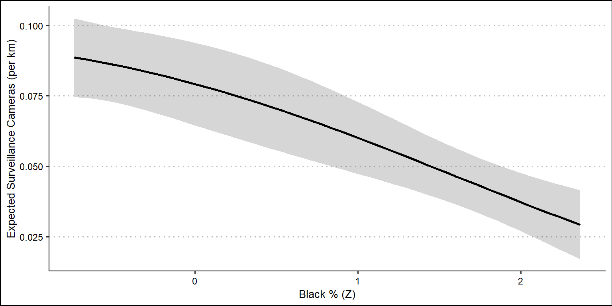
| Black % (Z) Trend | SE | Z | p | Percent Change | Lower CI | Upper CI |
|---|---|---|---|---|---|---|
| -0.016 | 0.002 | -7.271 | <0.001 | -1.631 | -2.067 | -1.194 |
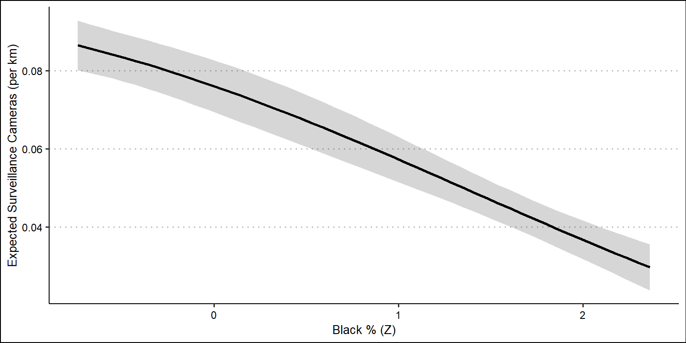
Notice that the trend of the factor is the same, it’s just that the weighted models are have much tighter standard errors, and therefore greater appearing statistical significance. For the effect of the percentage of black residents in an area, the effect is still seen significantly across both models, but that won’t always be the case as we’ll see later.
2.7 Diversity of Residents
| Diversity (Z) Trend | SE | Z | p | Percent Change | Lower CI | Upper CI |
|---|---|---|---|---|---|---|
| 0.004 | 0.004 | 0.959 | 0.337 | 0.407 | -0.422 | 1.243 |
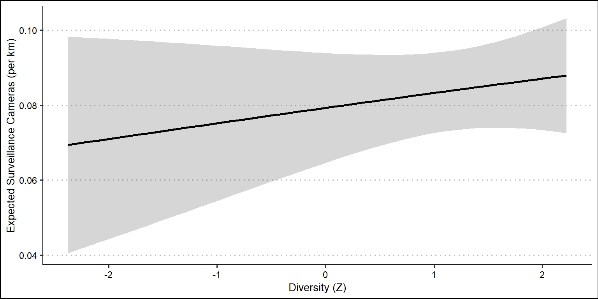
| Diversity (Z) Trend | SE | Z | p | Percent Change | Lower CI | Upper CI |
|---|---|---|---|---|---|---|
| 0.006 | 0.002 | 3.292 | <0.001 | 0.62 | 0.25 | 0.99 |
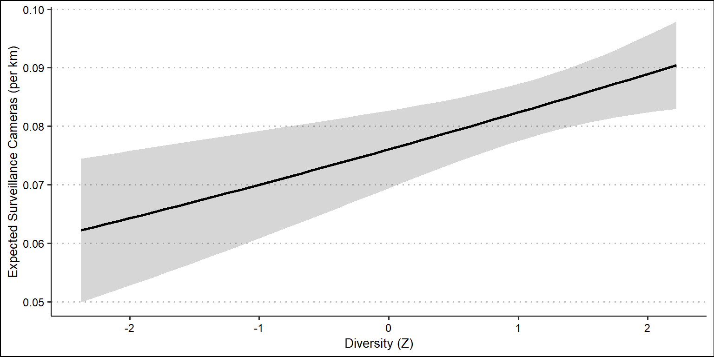
In the case of the diversity of the residents, the weighted model is much more confident about the effect compared to the uncertainty in the unweighted model. This leaves us in a tricky spot, where your choice of how to view these results depends on how much you agree with the researchers decision to weight the model.
2.8 Crime Rate
| Crime Rate (Z) Trend | SE | Z | p | Percent Change | Lower CI | Upper CI |
|---|---|---|---|---|---|---|
| 0.057 | 0.01 | 5.866 | <0.001 | 5.836 | 3.849 | 7.86 |
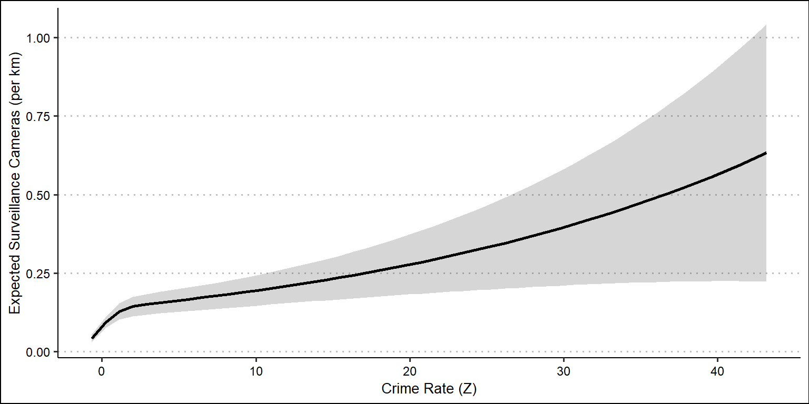
| Crime Rate (Z) Trend | SE | Z | p | Percent Change | Lower CI | Upper CI |
|---|---|---|---|---|---|---|
| 0.058 | 0.004 | 13.273 | <0.001 | 6.02 | 5.109 | 6.939 |
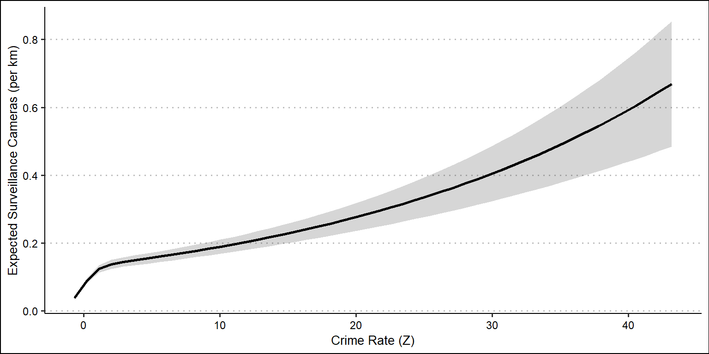
The effect of crime rate is pretty consistently positive on the amount of surveillance cameras. Because there are some crazy high outliers, both models are more uncertain towards the right tail of the data.
2.9 Population
| Population (Z) Trend | SE | Z | p | Percent Change | Lower CI | Upper CI |
|---|---|---|---|---|---|---|
| 0.014 | 0.002 | 6.469 | <0.001 | 1.416 | 0.985 | 1.849 |
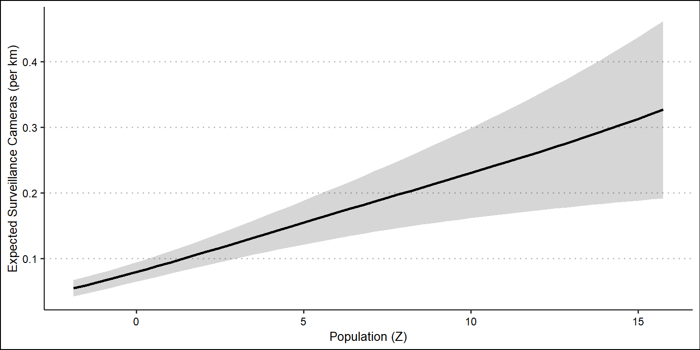
| Population (Z) Trend | SE | Z | p | Percent Change | Lower CI | Upper CI |
|---|---|---|---|---|---|---|
| 0.014 | 0.001 | 14.287 | <0.001 | 1.414 | 1.219 | 1.61 |
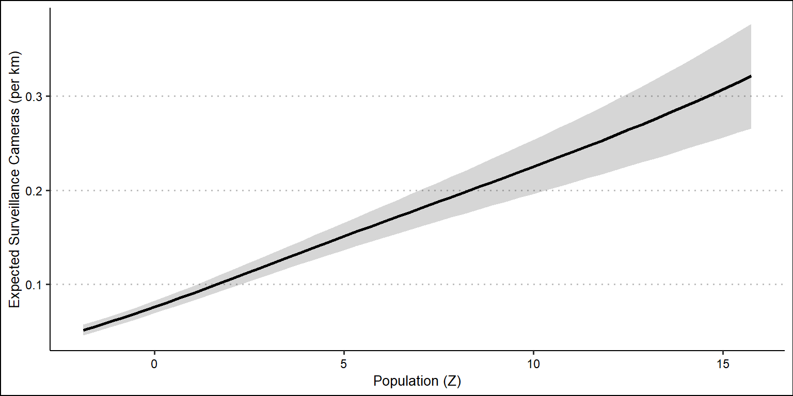
Both models are in agreement about the increasing number of surveillance cameras in areas with higher and higher populations.
2.10 Median Income
| Median Income (Z) Trend | SE | Z | p | Percent Change | Lower CI | Upper CI |
|---|---|---|---|---|---|---|
| -0.016 | 0.003 | -4.869 | <0.001 | -1.54 | -2.153 | -0.923 |
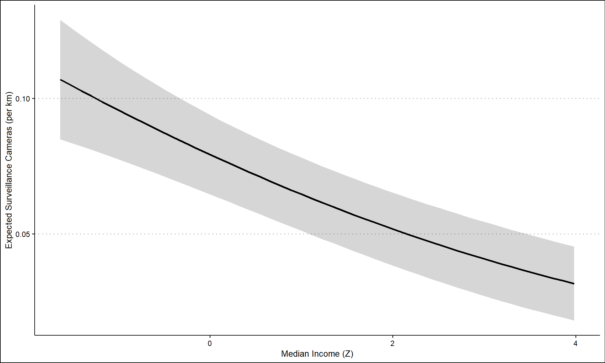
| Median Income (Z) Trend | SE | Z | p | Percent Change | Lower CI | Upper CI |
|---|---|---|---|---|---|---|
| -0.015 | 0.001 | -10.45 | <0.001 | -1.491 | -1.768 | -1.213 |
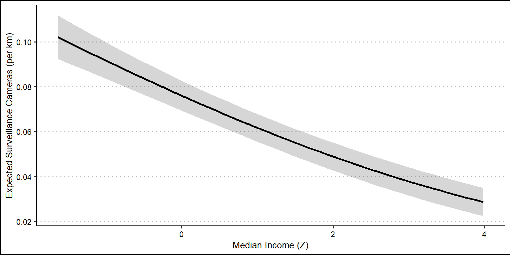
As the wealth of an area increases, there are fewer surveillance cameras.
2.11 Zoning
NoteShow Contrasts Table
| Contrast | Estimate | SE | Z | p | Adjusted p | Percent Change | Upper CI | Lower CI |
|---|---|---|---|---|---|---|---|---|
| commercial - industrial | 0.001 | 0.013 | 0.001 | >0.999 | >0.999 | 0.001 | 3.782 | -3.643 |
| commercial - mixed | 0.001 | 0.015 | -1.059 | 0.897 | >0.999 | -1.620 | 2.799 | -5.849 |
| commercial - public | 0.044 | 0.011 | 3.838 | 0.002 | 0.006 | 4.485 | 7.944 | 1.136 |
| commercial - residential | 0.049 | 0.009 | 5.476 | <0.001 | <0.001 | 4.983 | 7.673 | 2.360 |
| commercial - roads | 0.033 | 0.020 | 1.687 | 0.54 | >0.999 | 3.353 | 9.273 | -2.247 |
| industrial - mixed | 0.001 | 0.017 | -0.940 | 0.936 | >0.999 | -1.621 | 3.376 | -6.377 |
| industrial - public | 0.044 | 0.014 | 3.129 | 0.022 | 0.054 | 4.484 | 8.741 | 0.393 |
| industrial - residential | 0.049 | 0.012 | 4.031 | <0.001 | 0.004 | 4.982 | 8.653 | 1.435 |
| industrial - roads | 0.033 | 0.021 | 1.598 | 0.6 | >0.999 | 3.352 | 9.609 | -2.548 |
| mixed - public | 0.06 | 0.016 | 3.733 | 0.003 | 0.008 | 6.205 | 11.200 | 1.434 |
| mixed - residential | 0.065 | 0.015 | 4.384 | <0.001 | 0.001 | 6.712 | 11.315 | 2.299 |
| mixed - roads | 0.049 | 0.023 | 2.124 | 0.275 | 0.589 | 5.055 | 12.240 | -1.671 |
| public - residential | 0.005 | 0.008 | 0.619 | 0.99 | >0.999 | 0.477 | 2.702 | -1.700 |
| public - roads | 0.001 | 0.018 | -0.610 | 0.99 | >0.999 | -1.083 | 4.079 | -5.990 |
| residential - roads | 0.001 | 0.016 | -0.969 | 0.928 | >0.999 | -1.553 | 3.082 | -5.979 |
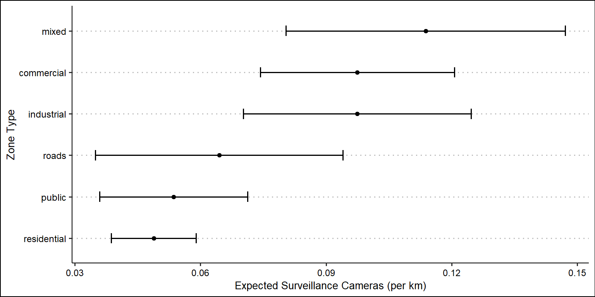
NoteShow Contrasts table
| Contrast | Estimate | SE | Z | p | Adjusted p | Percent Change | Upper CI | Lower CI |
|---|---|---|---|---|---|---|---|---|
| commercial - industrial | 0.001 | 0.006 | -0.369 | >0.999 | >0.999 | -0.233 | 1.578 | -2.011 |
| commercial - mixed | 0.001 | 0.007 | -1.685 | 0.542 | 0.677 | -1.164 | 0.813 | -3.102 |
| commercial - public | 0.041 | 0.005 | 7.723 | <0.001 | <0.001 | 4.219 | 5.820 | 2.642 |
| commercial - residential | 0.048 | 0.004 | 11.184 | <0.001 | <0.001 | 4.891 | 6.175 | 3.623 |
| commercial - roads | 0.032 | 0.009 | 3.717 | 0.003 | 0.005 | 3.229 | 5.775 | 0.745 |
| industrial - mixed | 0.001 | 0.008 | -1.185 | 0.844 | 0.905 | -0.933 | 1.327 | -3.143 |
| industrial - public | 0.044 | 0.006 | 6.749 | <0.001 | <0.001 | 4.462 | 6.406 | 2.554 |
| industrial - residential | 0.05 | 0.006 | 8.910 | <0.001 | <0.001 | 5.136 | 6.833 | 3.465 |
| industrial - roads | 0.034 | 0.009 | 3.799 | 0.002 | 0.004 | 3.470 | 6.152 | 0.856 |
| mixed - public | 0.053 | 0.007 | 7.495 | <0.001 | <0.001 | 5.446 | 7.594 | 3.341 |
| mixed - residential | 0.059 | 0.006 | 9.160 | <0.001 | <0.001 | 6.126 | 8.108 | 4.181 |
| mixed - roads | 0.043 | 0.010 | 4.372 | <0.001 | <0.001 | 4.445 | 7.448 | 1.526 |
| public - residential | 0.006 | 0.003 | 1.848 | 0.435 | 0.593 | 0.645 | 1.647 | -0.348 |
| public - roads | 0.001 | 0.008 | -1.249 | 0.813 | 0.905 | -0.950 | 1.231 | -3.084 |
| residential - roads | 0.001 | 0.007 | -2.349 | 0.175 | 0.262 | -1.584 | 0.341 | -3.473 |
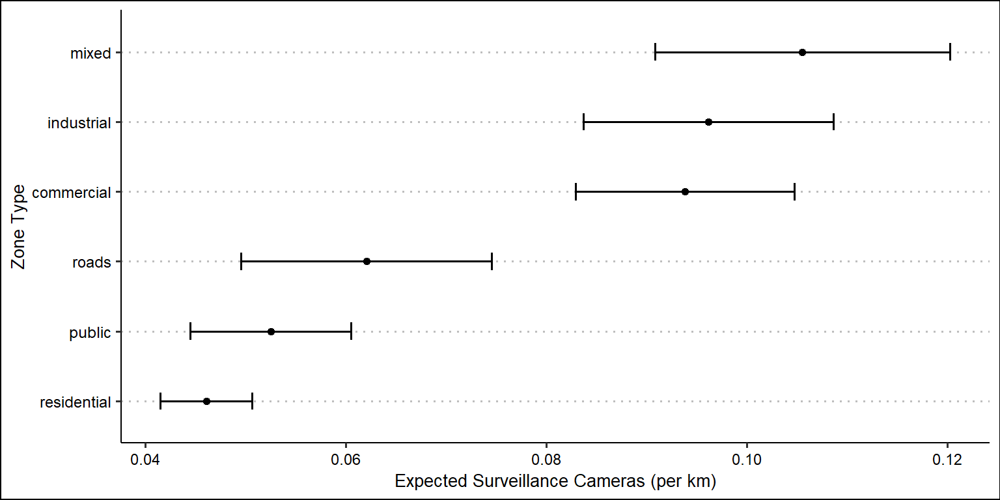
This is where the uncertainty differences between the models really start to be noticeable. In the weighted model, there’s two clusters that are different in the number of surveilance cameras in them: Higher in the mixed, industrial, and commercial areas, and lower in the roads, public, and residential areas. However, in the unweighted model, those two groups aren’t as separated, as the roads especially are harder to tell apart from the other zones.
2.12 City
NoteShow Contrasts table
| Contrast | Estimate | SE | Z | p | Adjusted p | Percent Change | Upper CI | Lower CI |
|---|---|---|---|---|---|---|---|---|
| Baltimore - Boston | 0.031 | 0.025 | 1.237 | 0.966 | >0.999 | 3.102 | 11.481 | -4.647 |
| Baltimore - Chicago | 0.175 | 0.023 | 7.721 | <0.001 | <0.001 | 19.093 | 27.932 | 10.864 |
| Baltimore - Los Angeles | 0.197 | 0.024 | 8.198 | <0.001 | <0.001 | 21.782 | 31.405 | 12.864 |
| Baltimore - Milwaukee | 0.145 | 0.020 | 7.091 | <0.001 | <0.001 | 15.582 | 23.295 | 8.350 |
| Baltimore - New York | 0.164 | 0.022 | 7.302 | <0.001 | <0.001 | 17.764 | 26.409 | 9.710 |
| Baltimore - Philadelphia | 0.142 | 0.020 | 7.090 | <0.001 | <0.001 | 15.245 | 22.777 | 8.174 |
| Baltimore - San Francisco | 0.136 | 0.024 | 5.606 | <0.001 | <0.001 | 14.620 | 23.794 | 6.126 |
| Baltimore - Seattle | 0.179 | 0.023 | 7.750 | <0.001 | <0.001 | 19.550 | 28.590 | 11.146 |
| Baltimore - Washington | 0.079 | 0.037 | 2.120 | 0.513 | 0.608 | 8.248 | 21.842 | -3.829 |
| Boston - Chicago | 0.144 | 0.022 | 6.628 | <0.001 | <0.001 | 15.509 | 23.738 | 7.827 |
| Boston - Los Angeles | 0.167 | 0.023 | 7.352 | <0.001 | <0.001 | 18.118 | 26.893 | 9.950 |
| Boston - Milwaukee | 0.114 | 0.021 | 5.494 | <0.001 | <0.001 | 12.104 | 19.728 | 4.965 |
| Boston - New York | 0.133 | 0.020 | 6.619 | <0.001 | <0.001 | 14.220 | 21.715 | 7.187 |
| Boston - Philadelphia | 0.111 | 0.020 | 5.521 | <0.001 | <0.001 | 11.777 | 19.141 | 4.869 |
| Boston - San Francisco | 0.106 | 0.020 | 5.330 | <0.001 | <0.001 | 11.171 | 18.383 | 4.398 |
| Boston - Seattle | 0.148 | 0.021 | 7.066 | <0.001 | <0.001 | 15.953 | 23.898 | 8.518 |
| Boston - Washington | 0.049 | 0.037 | 1.321 | 0.949 | >0.999 | 4.991 | 17.976 | -6.564 |
| Chicago - Los Angeles | 0.022 | 0.003 | 7.297 | <0.001 | <0.001 | 2.259 | 3.254 | 1.273 |
| Chicago - Milwaukee | 0.001 | 0.007 | -4.442 | <0.001 | <0.001 | -2.948 | -0.858 | -4.994 |
| Chicago - New York | 0.001 | 0.005 | -2.408 | 0.321 | 0.412 | -1.116 | 0.353 | -2.562 |
| Chicago - Philadelphia | 0.001 | 0.006 | -5.178 | <0.001 | <0.001 | -3.231 | -1.270 | -5.153 |
| Chicago - San Francisco | 0.001 | 0.011 | -3.432 | 0.021 | 0.034 | -3.756 | -0.299 | -7.093 |
| Chicago - Seattle | 0.004 | 0.004 | 0.896 | 0.997 | >0.999 | 0.384 | 1.753 | -0.966 |
| Chicago - Washington | 0.001 | 0.029 | -3.298 | 0.033 | 0.049 | -9.106 | -0.388 | -17.061 |
| Los Angeles - Milwaukee | 0.001 | 0.008 | -6.833 | <0.001 | <0.001 | -5.092 | -2.767 | -7.360 |
| Los Angeles - New York | 0.001 | 0.005 | -7.004 | <0.001 | <0.001 | -3.300 | -1.823 | -4.754 |
| Los Angeles - Philadelphia | 0.001 | 0.007 | -7.473 | <0.001 | <0.001 | -5.368 | -3.132 | -7.553 |
| Los Angeles - San Francisco | 0.001 | 0.011 | -5.393 | <0.001 | <0.001 | -5.881 | -2.475 | -9.169 |
| Los Angeles - Seattle | 0.001 | 0.004 | -4.458 | <0.001 | <0.001 | -1.833 | -0.536 | -3.113 |
| Los Angeles - Washington | 0.001 | 0.029 | -4.113 | 0.002 | 0.003 | -11.113 | -2.682 | -18.814 |
| Milwaukee - New York | 0.019 | 0.007 | 2.563 | 0.236 | 0.312 | 1.888 | 4.268 | -0.438 |
| Milwaukee - Philadelphia | 0.001 | 0.007 | -0.436 | >0.999 | >0.999 | -0.292 | 1.843 | -2.381 |
| Milwaukee - San Francisco | 0.001 | 0.012 | -0.674 | >0.999 | >0.999 | -0.832 | 3.137 | -4.649 |
| Milwaukee - Seattle | 0.034 | 0.008 | 4.478 | <0.001 | <0.001 | 3.434 | 5.931 | 0.996 |
| Milwaukee - Washington | 0.001 | 0.030 | -2.212 | 0.448 | 0.56 | -6.345 | 2.859 | -14.725 |
| New York - Philadelphia | 0.001 | 0.007 | -3.211 | 0.043 | 0.063 | -2.139 | -0.032 | -4.202 |
| New York - San Francisco | 0.001 | 0.009 | -2.914 | 0.101 | 0.138 | -2.670 | 0.232 | -5.487 |
| New York - Seattle | 0.015 | 0.004 | 3.365 | 0.027 | 0.041 | 1.517 | 2.964 | 0.090 |
| New York - Washington | 0.001 | 0.029 | -2.917 | 0.101 | 0.138 | -8.080 | 0.714 | -16.107 |
| Philadelphia - San Francisco | 0.001 | 0.012 | -0.458 | >0.999 | >0.999 | -0.542 | 3.266 | -4.209 |
| Philadelphia - Seattle | 0.037 | 0.007 | 5.186 | <0.001 | <0.001 | 3.736 | 6.083 | 1.441 |
| Philadelphia - Washington | 0.001 | 0.030 | -2.123 | 0.511 | 0.608 | -6.071 | 3.118 | -14.441 |
| San Francisco - Seattle | 0.042 | 0.010 | 4.050 | 0.002 | 0.004 | 4.302 | 7.790 | 0.926 |
| San Francisco - Washington | 0.001 | 0.031 | -1.867 | 0.692 | 0.798 | -5.559 | 4.054 | -14.284 |
| Seattle - Washington | 0.001 | 0.029 | -3.438 | 0.021 | 0.034 | -9.454 | -0.790 | -17.361 |
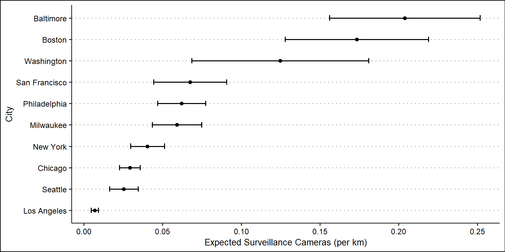
NoteShow Contrasts table
| Contrast | Estimate | SE | Z | p | Adjusted p | Percent Change | Upper CI | Lower CI |
|---|---|---|---|---|---|---|---|---|
| Baltimore - Boston | 0.04 | 0.011 | 3.652 | 0.01 | 0.011 | 4.113 | 7.812 | 0.541 |
| Baltimore - Chicago | 0.176 | 0.010 | 17.223 | <0.001 | <0.001 | 19.303 | 23.235 | 15.497 |
| Baltimore - Los Angeles | 0.198 | 0.011 | 18.192 | <0.001 | <0.001 | 21.886 | 26.154 | 17.762 |
| Baltimore - Milwaukee | 0.148 | 0.009 | 16.093 | <0.001 | <0.001 | 15.897 | 19.308 | 12.584 |
| Baltimore - New York | 0.169 | 0.010 | 16.592 | <0.001 | <0.001 | 18.384 | 22.256 | 14.635 |
| Baltimore - Philadelphia | 0.149 | 0.009 | 16.279 | <0.001 | <0.001 | 16.027 | 19.427 | 12.723 |
| Baltimore - San Francisco | 0.141 | 0.011 | 12.789 | <0.001 | <0.001 | 15.158 | 19.249 | 11.207 |
| Baltimore - Seattle | 0.18 | 0.010 | 17.343 | <0.001 | <0.001 | 19.704 | 23.697 | 15.841 |
| Baltimore - Washington | 0.081 | 0.016 | 4.950 | <0.001 | <0.001 | 8.475 | 14.264 | 2.980 |
| Boston - Chicago | 0.136 | 0.010 | 13.746 | <0.001 | <0.001 | 14.590 | 18.239 | 11.054 |
| Boston - Los Angeles | 0.158 | 0.010 | 15.355 | <0.001 | <0.001 | 17.071 | 20.935 | 13.330 |
| Boston - Milwaukee | 0.107 | 0.009 | 11.395 | <0.001 | <0.001 | 11.319 | 14.682 | 8.054 |
| Boston - New York | 0.128 | 0.009 | 13.991 | <0.001 | <0.001 | 13.707 | 17.059 | 10.452 |
| Boston - Philadelphia | 0.108 | 0.009 | 11.727 | <0.001 | <0.001 | 11.443 | 14.749 | 8.233 |
| Boston - San Francisco | 0.101 | 0.009 | 11.271 | <0.001 | <0.001 | 10.609 | 13.784 | 7.522 |
| Boston - Seattle | 0.14 | 0.009 | 14.870 | <0.001 | <0.001 | 14.975 | 18.440 | 11.612 |
| Boston - Washington | 0.041 | 0.016 | 2.545 | 0.244 | 0.268 | 4.190 | 9.642 | -0.992 |
| Chicago - Los Angeles | 0.021 | 0.001 | 15.495 | <0.001 | <0.001 | 2.165 | 2.612 | 1.719 |
| Chicago - Milwaukee | 0.001 | 0.003 | -10.095 | <0.001 | <0.001 | -2.855 | -1.969 | -3.733 |
| Chicago - New York | 0.001 | 0.002 | -3.679 | 0.009 | 0.01 | -0.770 | -0.108 | -1.428 |
| Chicago - Philadelphia | 0.001 | 0.003 | -10.425 | <0.001 | <0.001 | -2.746 | -1.921 | -3.565 |
| Chicago - San Francisco | 0.001 | 0.005 | -6.994 | <0.001 | <0.001 | -3.475 | -1.918 | -5.007 |
| Chicago - Seattle | 0.003 | 0.002 | 1.736 | 0.775 | 0.83 | 0.336 | 0.951 | -0.275 |
| Chicago - Washington | 0.001 | 0.013 | -7.516 | <0.001 | <0.001 | -9.076 | -5.361 | -12.646 |
| Los Angeles - Milwaukee | 0.001 | 0.003 | -15.375 | <0.001 | <0.001 | -4.914 | -3.923 | -5.894 |
| Los Angeles - New York | 0.001 | 0.002 | -13.888 | <0.001 | <0.001 | -2.873 | -2.226 | -3.516 |
| Los Angeles - Philadelphia | 0.001 | 0.003 | -15.941 | <0.001 | <0.001 | -4.807 | -3.872 | -5.733 |
| Los Angeles - San Francisco | 0.001 | 0.005 | -11.249 | <0.001 | <0.001 | -5.520 | -3.999 | -7.017 |
| Los Angeles - Seattle | 0.001 | 0.002 | -9.683 | <0.001 | <0.001 | -1.790 | -1.209 | -2.368 |
| Los Angeles - Washington | 0.001 | 0.013 | -9.296 | <0.001 | <0.001 | -11.003 | -7.401 | -14.464 |
| Milwaukee - New York | 0.021 | 0.003 | 6.742 | <0.001 | <0.001 | 2.146 | 3.169 | 1.133 |
| Milwaukee - Philadelphia | 0.001 | 0.003 | 0.404 | >0.999 | >0.999 | 0.112 | 0.994 | -0.762 |
| Milwaukee - San Francisco | 0.001 | 0.006 | -1.158 | 0.978 | >0.999 | -0.638 | 1.115 | -2.360 |
| Milwaukee - Seattle | 0.032 | 0.003 | 10.071 | <0.001 | <0.001 | 3.285 | 4.339 | 2.242 |
| Milwaukee - Washington | 0.001 | 0.013 | -5.130 | <0.001 | <0.001 | -6.404 | -2.505 | -10.147 |
| New York - Philadelphia | 0.001 | 0.003 | -6.921 | <0.001 | <0.001 | -1.991 | -1.086 | -2.888 |
| New York - San Francisco | 0.001 | 0.004 | -6.455 | <0.001 | <0.001 | -2.725 | -1.399 | -4.034 |
| New York - Seattle | 0.011 | 0.002 | 5.618 | <0.001 | <0.001 | 1.115 | 1.748 | 0.486 |
| New York - Washington | 0.001 | 0.013 | -6.943 | <0.001 | <0.001 | -8.370 | -4.647 | -11.949 |
| Philadelphia - San Francisco | 0.001 | 0.005 | -1.414 | 0.923 | 0.966 | -0.749 | 0.934 | -2.404 |
| Philadelphia - Seattle | 0.031 | 0.003 | 10.498 | <0.001 | <0.001 | 3.169 | 4.144 | 2.204 |
| Philadelphia - Washington | 0.001 | 0.013 | -5.250 | <0.001 | <0.001 | -6.509 | -2.639 | -10.225 |
| San Francisco - Seattle | 0.039 | 0.005 | 8.378 | <0.001 | <0.001 | 3.948 | 5.479 | 2.439 |
| San Francisco - Washington | 0.001 | 0.013 | -4.486 | <0.001 | <0.001 | -5.803 | -1.747 | -9.692 |
| Seattle - Washington | 0.001 | 0.013 | -7.816 | <0.001 | <0.001 | -9.381 | -5.695 | -12.923 |
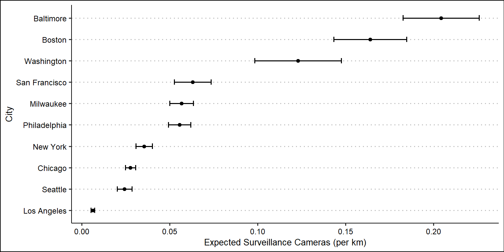
Differences in individual cities are much less obvious in the unweighted model. In both models, Baltimore, Boston, and Washington D.C. are on the higher end of the scale for surveillance cameras. San Francisco, Milwaukee, and Philadelphia are all very similar to each other. Lastly, Los Angeles clearly has the least amount of the surveillance cameras.
2.13 Conclusions
We have strong evidence that the more heavily an area is made up of black residents, there are fewer surveillance cameras (Figure 9; Figure 10). If we could connect this with strong evidence that racial diversity affects the prevalence of surveillance cameras, we could start getting at the researcher’s hypothesis, but I hesitate to make that claim. Because of the differences in the weighted and unweighted model, we see that those observations that are weighted higher are entirely driving the effect of diversity (Figure 11; Figure 12).
Somewhat expectedly, areas that have high rates of crime also have high numbers of surveillance cameras (Figure 13; Figure 14), though there’s a very high range of uncertainty as crime rates become higher.
Going along with crime rate, higher population areas have higher numbers of surveillance cameras (Figure 13; Figure 14), most likely for the reasons that more people means more crime and other things to surveill.
Inversely to crime rate, wealthier areas tend to have lower numbers of surveillance cameras (Figure 17; Figure 18), probably for similar reasons.
The zone of the road makes a difference to the number of surveillance cameras (Figure 19; Figure 20). Even though we’re hearing about the increasing prevalence of surveillance cameras in residential neighborhoods, the data still suggests that those zones have the fewest amount of cameras.
Lastly, individual cities have quite large differences in the number of surveillance cameras (Figure 21; Figure 22). This shouldn’t be surprising. As we saw in the VIF table (Table 1), the cities are highly correlated with the other factors, so we can almost view each city as just the products of demographic and socioeconomic features that could be hard to separate from individual political or geographic effects.
We should probably talk about the weights. Usually, in the case of a meta-analysis, the sample size of each study being the weights directly corresponds to reliability in a statistical sense, but that’s just not the case in this study. The randomly sampled nature of the street view images mean there is no way to know if 10 images are twice as reliable as 5. Based on where those images were taken, they could give the exact same amount of information, but not the same power over the model.
My gut tells me to go with the results that hold between the two models, so that includes the effects of Black % (Figure 9; Figure 10), crime rate (at high levels) (Figure 13; Figure 14), population (Figure 15; Figure 16), median income (Figure 17; Figure 18), zoning (Figure 19; Figure 20), and cities (Figure 21; Figure 22).
3 Comparisons With the Article
The main figure we can compare our results to in the paper is Figure 2, which I’ll split up by section. A difference that may or may not be visible is the fact that they authors actually have two separate models models, one with diversity, and one with individual black % white % variables.
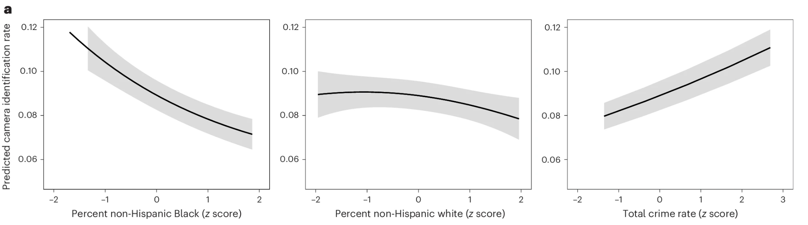
The models shown in Figure 2a only use diversity, and not black or white % variables.
Compared to our model, which includes the individual black and white % terms and diversity, their figure shows more of a quadratic shape, whereas ours is more linear appearing (Figure 9; Figure 10). Still, our conclusion is the same.
Because the only indication of the white % having an effect was a marginal effect in our weighted model (Table 8), I didn’t see a need to further analyze it. So while the authors claim:
“Fig. 2a (middle) reveals a nonlinear relationship between the percentage of non-Hispanic white residents and the estimated camera identification rate: the camera identification rate is constant with the percentage of non-Hispanic white residents up to a certain point (around the city mean) after which it starts to decline, although estimates are noisy. Thus, neighborhoods with low-to-moderate proportions of white residents appear to have higher camera detection rates than those with very high proportions of white residents.”
Because they don’t give any statistical evidence for this claim, like a discernible effect of the coefficient, I wonder if they’re just interpreting the shape of the graph. Even then, the graph seems relatively flat which I would interpret as showing little to no effect.
Lastly, for the crime rate graph, they severly truncate their graph to only show a maximum of 2.5 standard deviations above the mean, so there’s no way to see the, in my opinion, more interesting relationship between crime and surveillance cameras in especially high crime rate areas. Even if the tail of our graph near 40 standard deviations is due to one outlier (Figure 13; Figure 14), there are still a good amount of observations over 10 standard deviations above the mean, so it’s a shame they don’t show that. Still, the results are pretty similar between our analyses.
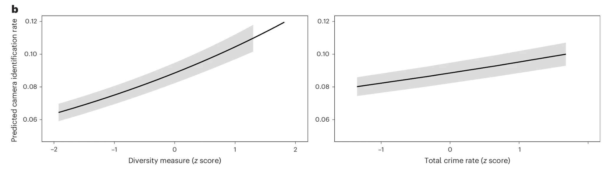
In Figure 2b they show their model that replaces the black % white % variables with an overall shannon diversity metric. In our analysis, only the weighted model showed a discernible effect of diversity (Table 8), though that was with all the terms included. Due to the high colinearity between the black & white % variables and diversity (Table 1), it’s reasonable to assume our model was unable to separate those. So, while our plot looks similar to there’s, I wouldn’t say the evidence across both the unweighted and weighted model is strong. So when the authors say:
“As shown, camera detection is monotonically positively related to neighborhood diversity, indicating that more diverse neighborhoods tend to have higher rates of camera detection.”
I’d have to push back on that slightly, as that is really heavily dependent on the model weights.
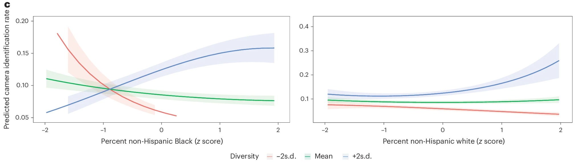
Even though the authors don’t add any interaction terms to their model, or discuss that in the methods, the seem to be testing the interaction between black % and diversity and the interaction between white % and diversity. To compare, I’ll attempt to recreate their analysis:
For the unweighted model:
| Contrast | Estimate | SE | Z | p | adjusted-p | Percent Change | Lower CI | Upper CI |
|---|---|---|---|---|---|---|---|---|
| Low (-2SD) - Average | 0.003 | 0.002 | 1.372 | 0.355 | 0.448 | 0.279 | -2.560 | 0.937 |
| Low (-2SD) - High (2SD) | 0.006 | 0.005 | 1.290 | 0.401 | 0.448 | 0.583 | -5.420 | 2.378 |
| Average - High (2SD) | 0.003 | 0.003 | 1.208 | 0.448 | 0.448 | 0.303 | -2.989 | 1.484 |
To recreate their plot:
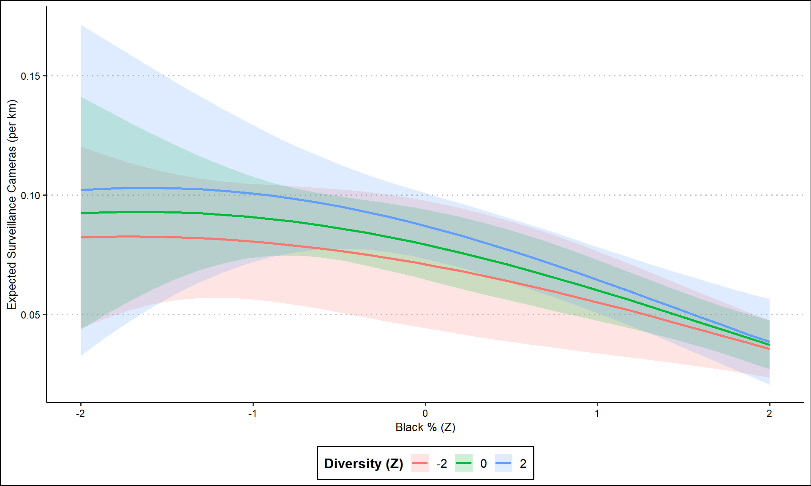
Now for the weighted model:
| Contrast | Estimate | SE | Z | p | adjusted-p | Percent Change | Lower CI | Upper CI |
|---|---|---|---|---|---|---|---|---|
| Low (-2SD) - Average | 0.004 | 0.001 | 3.729 | 0.001 | 0.002 | 0.355 | -1.881 | -0.455 |
| Low (-2SD) - High (2SD) | 0.008 | 0.002 | 3.448 | 0.002 | 0.002 | 0.779 | -4.159 | -0.681 |
| Average - High (2SD) | 0.004 | 0.001 | 3.217 | 0.004 | 0.004 | 0.423 | -2.339 | -0.210 |
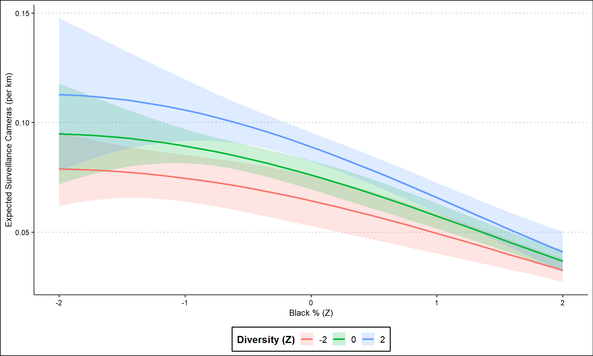
As we can see, in our models, when the individual black & white % terms are included in the model, there’s no discernible difference in the effect of black % on the number of surveillance cameras across any level diversity. This may show that my approach with combining everything into one model could be interfering with the ability to interpret the effect of diversity.
While the authors mention residualizing the racial demographics when they’re included in a model with the diversity metric, they also say that this makes little difference on the model. What they don’t mention in the methods is anything about fitting separate models that exclude either the racial characteristics or the diversity metric, they only do so in the figure legends. Because I attempt to recreate their analysis based on the methods, I missed that detail.
Because of the miscues between the models and the non-discernability of the white % term in our models (Table 8; Table 6), I don’t think doing the analysis above but with white % is necessary.
4 Acknowledgement
I would like to thank the researchers who published this paper: Nima Dahir, Hao Sheng, Keniel Yao, Sharad Goel & Jackelyn Hwang. Transparency in data and code availability is hugely important for research ethics, and it makes my project possible.
5 AI Use
All of the guidance given by generative AI for this article can be found in this conversation.
6 Statistical Packages Used
- tidyverse for… everything it’s tidyverse (Wickham et al. 2019)
- ggplot2 for plotting (Wickham 2016)
- ggthemes for theme_clean() (Arnold 2024)
- patchwork for combined plots (Pedersen 2025)
- pscl for inference of Zero Inflated Count Regression model (Zeileis et al. 2008)
- performance for model fit statistics (Lüdecke et al. 2021)
- emmeans for estimated marginal means and trends (Lenth 2025)
References
Arnold, Jeffrey B. 2024. Ggthemes: Extra Themes, Scales and Geoms for ’Ggplot2’. https://CRAN.R-project.org/package=ggthemes.
Brumbaugh, Jocelyn. 2026. What Are Flock Cameras? What to Know about Surveillance Cameras Being Vandalized Across the Country. Https://www.wbaltv.com/article/what-are-flock-cameras/73408226.
Dahir, Nima, Hao Sheng, Keniel Yao, Sharad Goel, and Jackelyn Hwang. 2025. “Surveillance Camera Prevalence and Racial Diversity in Ten US Cities.” Nature Cities 2 (7): 662–70. https://doi.org/10.1038/s44284-025-00274-2.
Foucault, Michel. 2012. Discipline and Punish: The Birth of the Prison. 2nd Vintage Books. Knopf Doubleday Publishing Group.
King, Jordan. 2026. “Patriot Act Turns 25: What Happened to Americans’ Rights?” Newsweek, October. https://www.newsweek.com/patriot-act-turns-25-what-happened-americans-rights-12607342.
Lenth, Russell V. 2025. Emmeans: Estimated Marginal Means, Aka Least-Squares Means. https://CRAN.R-project.org/package=emmeans.
Lüdecke, Daniel, Mattan S. Ben-Shachar, Indrajeet Patil, Philip Waggoner, and Dominique Makowski. 2021. “performance: An R Package for Assessment, Comparison and Testing of Statistical Models.” Journal of Open Source Software 6 (60): 3139. https://doi.org/10.21105/joss.03139.
Pedersen, Thomas Lin. 2025. Patchwork: The Composer of Plots. https://CRAN.R-project.org/package=patchwork.
Taylor, John M. 2025. “Questionable Research Practices: HARKing.” Journal of Nursing Education 64 (11): 747–48. https://doi.org/10.3928/01484834-20251014-02.
Wickham, Hadley. 2016. Ggplot2: Elegant Graphics for Data Analysis. Springer-Verlag New York. https://ggplot2.tidyverse.org.
Wickham, Hadley, Mara Averick, Jennifer Bryan, et al. 2019. “Welcome to the tidyverse.” Journal of Open Source Software 4 (43): 1686. https://doi.org/10.21105/joss.01686.
Zeileis, Achim, Christian Kleiber, and Simon Jackman. 2008. “Regression Models for Count Data in R.” Journal of Statistical Software 27 (8). http://www.jstatsoft.org/v27/i08/.